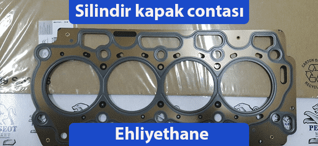

Silindir kapak contası; silindir bloğu ile silindir kapağı arasındaki sızdırmazlığı sağlayan parçadır. Yandığı zaman büyük sorunlara neden olan silindir kapak contası, motor için hayati öneme sahiptir.
Silindir kapak contasının ne işe yaradığını anlatabilmek için silindir kapağı, silindir bloğunu ve karterin ne olduğuna kısaca değinelim.
Silindir kapağı; üzerinde eksantrik mili, sübaplar, bujiler ve enjektörlerin yer aldığı ve yanma odasının üst kısmını oluşturan kapaktır.
Silindir bloğu; krank miline yataklık yapan zamanlama dişlileri, piston gibi parçaları da üzerinde bulunduran motorun orta kısmını oluşturan gövdedir.
Karter; silindir bloğunun alt kısmında bulunan ve motor yağının depolanmasını sağlayan bir parçadır. Silindir kapağı, silindir bloğunun üst kısmını kapatırken, karter de silindir bloğunun alt kısmını kapatarak motoru kapalı bir sistem haline getirir.
Motorun çalışabilmesi için gerekli olan patlama reaksiyonları yanma odasında gerçekleşir. Yanma odası dediğimiz bölüm silindir kapağı ile silindir bloğu arasında kalan bir bölgededir. Ayrıca motorun çalışması esnasında motor parçalarının ısı ve sürtünmeden dolayı zarar görmesini önlemek için motor yağı ile yağlanması gerekir.
Motorun yağlanması esnasında ve patlama reaksiyonlarının gerçekleşmesi esnasında silindir bloğu ile silindir kapağı arasında tam bir sızdırmazlık olmak zorundadır. Çünkü sızıntı olması durumunda yanma odasının içerisine su ve yağ dolacaktır. İşte silindir bloğu ile silindir kapağı arasındaki sızdırmazlığı sağlayan elemanın adıdır silindir kapak contası.
Silindir kapak contasının yanması motorunuzda büyük hasarlara yol açabilir. Aracınızın contası daha çok aşağıdaki nedenlerden dolayı yanar.
Motorunuz conta yaktığında, motor parçaları ciddi anlamda zarar görmeye başlayacaktır. Arabanızın size çok büyük masraflar çıkarmasını istemiyorsanız motorun conta yaktığını anlamanız büyük önem taşıyor.
Aracınızın conta yaktığını anlayabilmek için aşağıdaki kontrolleri yapmanız yeterlidir.